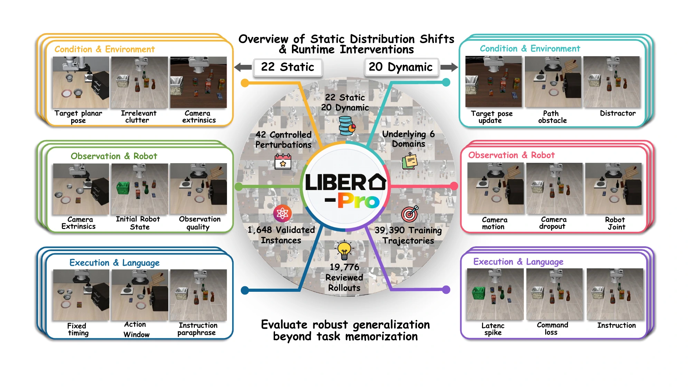
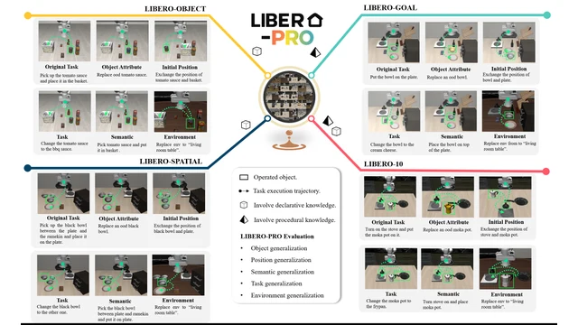

 LIBERO-Pro 2.0Latest Paper details will be announced. Project Page Leaderboard Code Document
 LIBERO-Pro: Towards Robust and Fair Evaluation of Vision-Language-Action Models Beyond MemorizationPrevious Xueyang Zhou, Yangming Xu, Guiyao Tie, Yongchao Chen, Guowen Zhang, Duanfeng Chu, Pan Zhou, Lichao Sun Project Page Paper arXiv Code Dataset